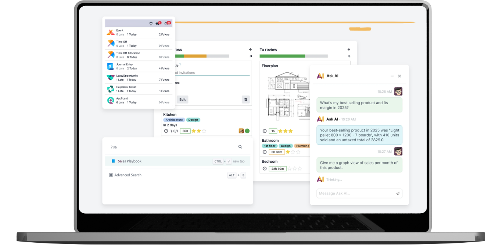

Información dispersa
Conectamos los datos que hoy están repartidos entre archivos, mensajes y sistemas.
ERP · Automatización · Integraciones · Desarrollo a medida
Diseñamos, implementamos e integramos soluciones empresariales adaptadas a la forma en que realmente opera tu empresa. No empezamos por el software: empezamos por entender tu operación.
Solicitar Diagnóstico Operativo
01 / PROBLEMA
Una parte está en Excel. Otra, en WhatsApp, correos y programas que no se comunican. Y otra depende de lo que una persona recuerda. Cuando la empresa crece, coordinar todo cuesta más.
Conectamos los datos que hoy están repartidos entre archivos, mensajes y sistemas.
Diseñamos un flujo compartido y automatizamos las tareas que se repiten.
Integramos los sistemas existentes para reducir la doble digitación y los errores.
Configuramos o desarrollamos las funciones que tu operación necesita.
Analizamos tu operación, diseñamos el flujo, implementamos la solución e integramos las herramientas que ya utilizas.
Diseñamos el flujo, conectamos las herramientas y automatizamos el trabajo manual innecesario.
Excel → WhatsApp → correo → aprobación → sistema → Excel → contabilidad
Solicitud → aprobación → ejecución → facturación → contabilidad → indicadores
02 / SERVICIOS
ERP, contabilidad, ventas y CRM, compras, inventario, nómina, proyectos, comisiones, punto de venta, producción y facturación electrónica para República Dominicana.
Solicitar evaluación inicial ↗Reducimos tareas repetitivas: aprobaciones, documentos, notificaciones, seguimiento y tareas administrativas. Usamos IA cuando aporta valor.
Solicitar evaluación inicial ↗Conectamos APIs, sistemas existentes, bancos, facturación electrónica, WhatsApp, ecommerce, transportistas y plataformas externas.
Solicitar evaluación inicial ↗Construimos portales, módulos, interfaces, aplicaciones y procesos particulares que el software estándar no resuelve.
Solicitar evaluación inicial ↗Organizamos migraciones, reportes, tableros, indicadores, trazabilidad y procesamiento documental para decidir con mejores datos.
Solicitar evaluación inicial ↗03 / PROCESO
Combinamos arquitectura de software y conocimiento de procesos para construir una solución que tenga sentido para tu empresa y pueda evolucionar contigo.
01
Revisamos cómo trabaja tu empresa, dónde se pierde tiempo y qué necesita mejorar.
02
Definimos los procesos, las herramientas y las conexiones que necesita la solución.
03
Configuramos, desarrollamos e integramos el sistema. Lo probamos con tu equipo y acompañamos su puesta en marcha.
04
Medimos los resultados y ajustamos la solución a medida que cambia tu operación.
04 / SECTORES
01
Desde compras e inventario hasta ventas, facturación y coordinación de entregas.
02
Desde planificación de proyectos y horas hasta facturación y control de rentabilidad.
03
Desde almacenes y seguimiento hasta portales de clientes e integración de sistemas.
04
Desde materiales y producción hasta costos, inventario y trazabilidad.
05
Desde compras y lotes hasta vencimientos, inventario y trazabilidad.
Diseñamos la solución según los procesos de tu empresa.
Cuéntanos qué necesitas ↗
“Intrepidux combina un diseño cuidado con soluciones prácticas de facturación electrónica. Es el equipo al que acudimos cuando surge una urgencia técnica compleja y necesitamos una respuesta ágil.”
“Necesitábamos apoyo técnico para implementar integraciones y dar seguimiento a los proyectos, manteniendo una comunicación clara con nuestros clientes.”
06 / POR QUÉ INTREPIDUX
Diseñamos sistemas empresariales alrededor de cómo funciona tu negocio.
Definimos indicadores desde el inicio para medir tiempos, errores y trabajo manual. Con datos reales, evaluamos el impacto de la solución.
Entendemos el trabajo antes de elegir la herramienta.
Organizamos la solución para que pueda crecer y cambiar.
Conectamos las herramientas que necesitas conservar.
Construimos las funciones que tu operación requiere.
Definimos indicadores para evaluar las mejoras.
08 / FAQ
Explícanos cómo trabajan hoy y qué necesitan resolver. Revisaremos contigo por dónde empezar.